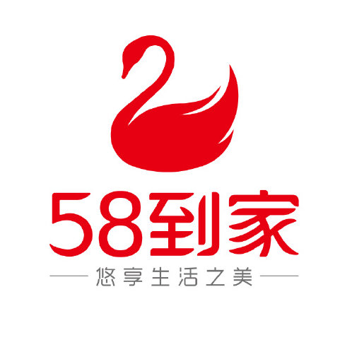

首页
个人简历
旅行足迹
电影片单
生活点滴
个人信息
陈稚玺
156-2323-0700 | chenzhixi99@163.com
2021年毕业
求职意向：新媒体运营、内容运营
教育背景
2017.09-2021.06
中南财经政法大学
信息管理与信息系统 本科
2019.03-2020.01
中南财经政法大学
新闻学 本科
在校辅修双学位
专业排名
前10%
相关课程：新闻编辑学、新闻写作学、新闻采访学
校园经历
中南财经政法大学电影协会
2018.09-2019.09
副会长
与淘票票进行校园合作，对其校园产品“淘票票小聚场”进行前期线上宣传，发表宣传资讯50+条
线下与学校周边影院合作进行观影活动，合作场次超过15场
协调社团各部门日常工作，招纳社团新人150+人
工作期间获得
“2018学年校级社团优秀个人”
荣誉
中南财经政法大学官方新闻与新媒体中心
2017.09-2019.06
责任编辑
加入学校官方运营团队，对校内文娱、学术活动进行新闻稿创作，9篇稿件被校官方新闻网刊登
担任官方微信公众号责任编辑，创作出浏览量达
5w+
微信推文（2018年官方公众号浏览量前10名）和多篇浏览量达到校公众号前20的作品
运营校官方微博，在任期间粉丝增长1w+
工作期间获得
"2018学年校级优秀通讯员"
荣誉
实习经历
58到家
2020.02-2020.03

内容运营线上体验实习
编辑修改资讯与内容文章100+篇，为58到家用户提供优质科普文章
产出软文累计吸引8k+浏览与点击，同时对网站上不合格内容进行校正与修改
中国建设银行
2019.07-2019.09
“乡村振兴”暑期下乡实习生
开展“乡村振兴知识课堂”，向200+村民进行建行助农APP与金融知识介绍，以现场抽奖的方式提高村民的参与度
帮助10余家村镇商户开通网上银行
帮助大厅客户进行网上银行业务办理，提高客户办事效率，减少排队时间
技能/其他
WORD 80%
PHOTOSHOP 95%
推文制作 70%
软文文案 70%
个人总结
拥有2年为校级公众媒体撰写文案与运营经历，熟悉新媒体运作，擅长捕捉热点并结合时事进行文案创作。参 与组织多次校级社团活动，对合作品牌进行推广
逻辑能力、执行力强，思维活跃，拥有一定学习能力与执行力。善于沟通协调，能快速适应环境